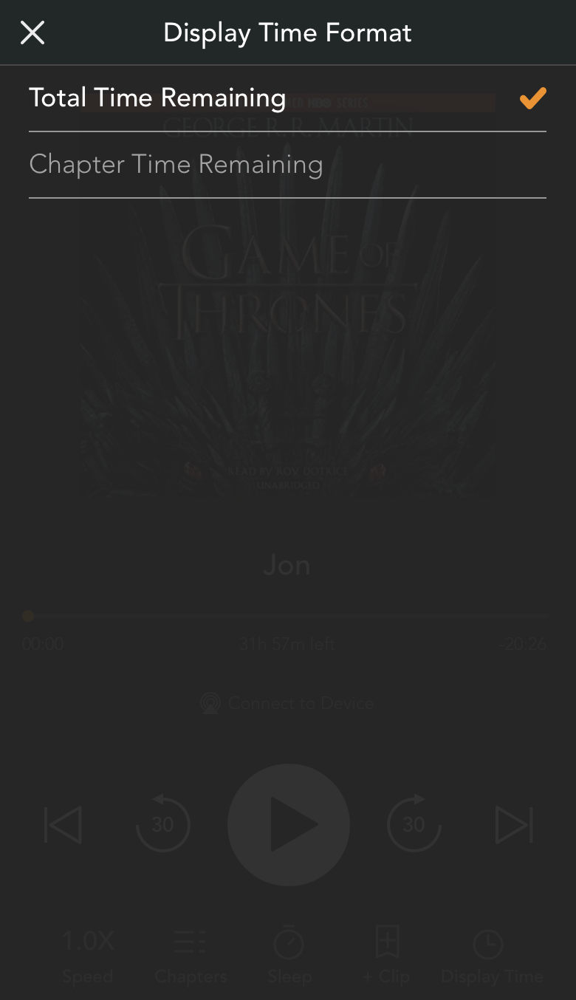
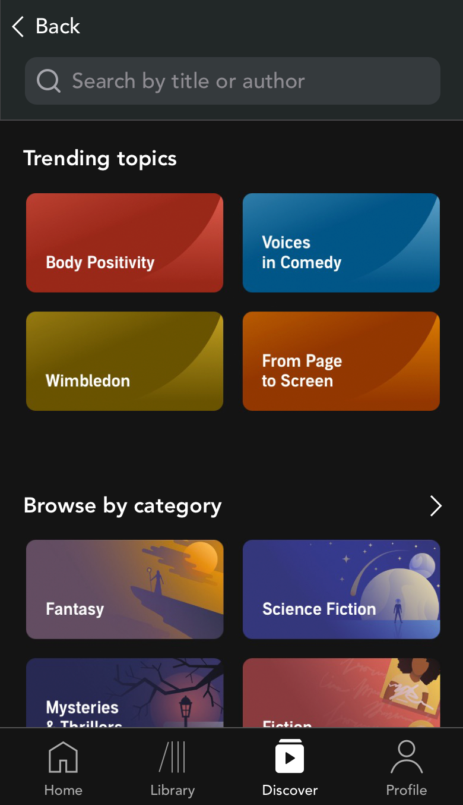
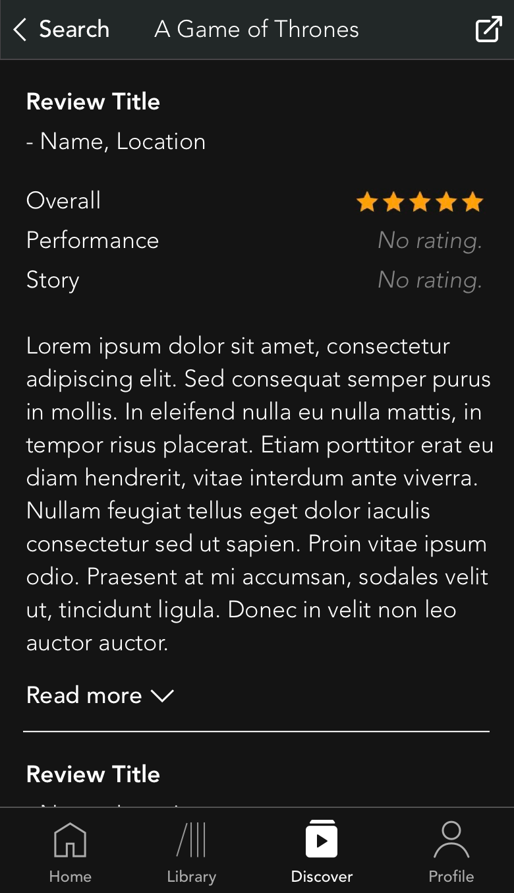
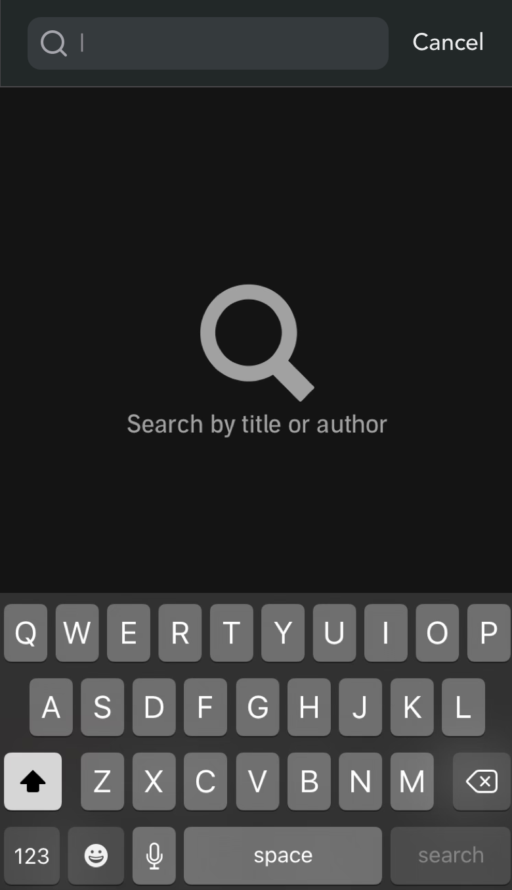

Amazon Audible
Case Study: Independent App Redesign



Overview
Roles
UX Designer, UX Researcher
Executive Summary
Amazon Audible gives users access to thousands of audiobooks, in addition to magazines, podcasts, and originals. This case study details the results of my usability testing (3 participants) and personal design evaluation of Audible, intended to gather qualitative data and discover usability issues.
These issues, along with their actionable design solutions and mockups, are provided below. Based on my findings, I propose several design solutions as well as steps to take for future research and design.
Design Process
UX Research Objectives
- Identify usability issues present in the selected application, using both direct evaluation and user testing.
- Analyze user research findings, design standards, and statistics as supporting evidence for the identified issues.
- Provide viable and achievable solutions, and clearly explain the necessary steps to achieving them.
Research & Design Steps
- Empathize: I tested the application, observing users complete tasks intended to evaluate the core use cases for Audible: finding an audiobook, deciding whether or not to purchase an audiobook, and listening to an audiobook. I used the participants’ performance and feedback to identify usability issues and support the proposed design solutions.
- Define: I directly evaluated the application to understand, categorize, and assign severity ratings to each identified issue.
- Sources included:
- Additionally, I evaluated competing applications, focusing on interactions similar to the issues identified in Audible. Screenshots from these applications are provided alongside Audible screenshots as necessary.
- Ideate: Finally, I built low-fidelity redesigns of existing Audible screens to communicate my proposed design solutions for each identified issue. These are not intended as a full prototype redesign, but rather for iterative testing as I move into the Prototyping phase.
User Study Format
- Participants
- Participant 1 is a novice Audible user with a decent amount of experience listening to audiobooks through CD, iTunes, and other applications. They are moderately experienced with a smart phone and its apps.
- Participant 2 is a novice Audible user with little to no experience listening to audiobooks, but lots of experience with music apps (Spotify, iTunes, and YouTube in particular). They are moderately experienced with a smart phone and its apps.
- Participant 3 is an experienced Audible user with lots of experience listening to audiobooks, as well as experience with music apps (Spotify and YouTube in particular). They are very experienced with a smart phone and its apps.
- Tasks
- Think of a title you would like to listen to and find it in the Audible library. Use whatever methods are available to you.
- Read reviews on the title from individual contributors. What do they think of the story, the performance, and the overall experience?
- Start listening to the title. Try playing, pausing, and skipping around within different chapters. Minimize the player screen and navigate the rest of the app while the title plays. Leave the app and try out the time controls from the Home and Lock screens
Usability Issues & Solutions
- Issue 1: Ribbon/Home Screen Player Timestamp
- Feature: When a title is playing in the minimized ribbon (inside the app), or on the lock screen of their device (outside the app), the time is displayed as total time remaining. This format cannot be changed.
- Issue & Evidence: To view the time remaining in the current chapter, the user must open to the app and maximize the ribbon player. This harms efficiency for users who need to quickly view the chapter time remaining. As discovered in user testing, it also prevents users from “scrubbing”, or holding and dragging to precisely move the time stamp around the current chapter; instead, users must return to Audible’s main player screen to use this feature. In addition, it is an established design principle across multiple audio players to display the time for a single “track” (in this case, chapter) rather than the full “album” (in this case, book), which both enables scrubbing from the lock screen and more precisely shows the user’s position in time.
- Heuristic: Flexibility and Efficiency of Use
- Severity: 3/4
- Solution: Added a “Display Time” button in the larger player screen. When the user selects it, they are presented the “Display Time Format” selection screen that follows the existing design guidance for Audible selection screens. The user can switch the time format here, which affects how the time is displayed in both the lock screen player and minimized in-app player.
- Issue 2: Review Stars
- Feature: Reviews left by users appear as a set of 5 stars, colored in either gold or gray to show how many out of 5 the user left the book. These are grouped by Overall, Performance, and Story categories.
- Issue & Evidence: Users may not leave any stars for some of these categories, but “no review” and “zero-star review” are visually equivalent. For some of the glowing reviews that I observed, users left 5 stars in Overall but none for Performance or Story. This appeared as if the Performance and Story categories were “bad”, when in reality the user simply didn’t care to fill out all of the categories. I am unsure as to whether this affects the overall score.
- Heuristic: Error Prevention
- Severity: 3/4
- Solution: If a user review doesn’t contain ratings for Overall, Performance, or Story, that particular category will display “No rating” rather than a grayed out set of stars.
- Issue 3: Search Shortcuts
- Feature: When the user is searching for a title, they currently do not have access to filters, categories, recommended, or other quick-search options. Existing entertainment applications currently do this, namely Spotify, Apple Music, and Apple Podcasts.
- Issue & Evidence: Implementing search categories, which are commonly used, popular, and useful, would help to increase the performance of Audible among potential competitors. In addition, not implementing this feature makes the search function “emptier”, as the user isn’t given potential directions as to where they may want to go. Ultimately this harms the efficiency and effectiveness of search-related tasks.
- Heuristic: Flexibility and Efficiency of Use
- Severity: 2/4
- Solution: When the user selects the magnifying glass from any screen, they are directed to the Search screen, which contains Trending, Categories, and more. When they select the Search Bar to begin typing, the other content disappears to make room for search results. Any recent searches will also appear in this section.

Summary
Next Steps
- Iterate on existing design solutions and continue to test with target users. Gather qualitative feedback from at least 5 participants to improve interactions, visual design, language, and other content.
- Build high-fidelity mockups of the screens in Sketch to support future design solutions and interactive prototyping.
- Conduct interactive testing with a new set of users; aim for 5 novice users and 5 expert users.